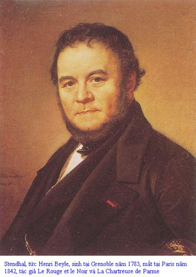

LỜI GIỚI THIỆU

TENDHAL
Có những cuốn sách đi vào trong con người chúng ta như một ông khách lầm nhà, vào rồi ra không dấu vết. Lại có những cuốn ta đọc lần đầu không thấy hay mấy, nhưng vẫn cảm thấy có một cái gì khiến chúng ta không đành dứt bỏ, rồi đến một lúc nào đó tìm đọc lại mới thấy sâu sắc, nhất là khi mình đã hiểu biết việc đời chút ít thì càng đọc càng khám phá ra những khía cạnh mới, tuyệt vời… và mình ân hận như đã mất bao nhiêu năm chậm hiểu một người bạn khó tìm thấy trên đời.

Tu Viện Thành Parme thuộc loại này.
Nói về Tu Viện Thành Parme, nhà văn Paul Morand (1888 - 1976) viết: “Những tác phẩm lớn ngao du trong con người chúng ta, có khi chúng lần lượt biến thành nhiều sách khác nhau, trong lúc chúng ta cũng hóa nên nhiều người, chúng ta đọc Stendhal lúc cuối đời không như đọc ông trong tuổi đầu xuân. Tôi đã phát hiện nhiều “Tu viện” như thế đó, những “Tu viện” ấy đã đi vô định năm mươi năm trong tôi và có lẽ cũng chưa làm trọn cuộc chu du của nó!”
Không những đối với một đời người, mà đối với nhiều thế hệ. Tu Viện Thành Parme cũng làm một cuộc hành trình tương tự. Cũng như mấy tiểu thuyết khác của Stendhal, buổi mới ra đời, Tu Viện Thành Parme không được hưởng một số phận tốt đẹp lắm, nó không làm chấn động dư luận, nhưng rồi thời gian và cuộc sống đã công bằng đem lại cho tác giả ánh hào quang thích đáng. Một phần vì Stendhal không viết theo thời thượng, phần khác vì sự phân tích con người rất sâu dưới vỏ ngôn ngữ mộc mạc, hầu như khô khan ở trên cái tầm tiếp thu thông thường của độc giả, ai dù thông minh, tinh tế và chịu khó đi vào chất nội dung mới thấy lý thú.
Stendhal thường nghĩ rằng tác phẩm của mình phải mấy chục năm sau người ta mới đánh giá đúng và ham đọc. Thật ra, không phải đợi lâu đến thế. Đối với những ai ý chí lớn, những ai có dụng ý khác đời thì tri kỷ quả có hiếm, nhưng không phải là không có, Tu Viện Thành Parme phát hành đầu tháng từ năm 1839, thì tháng 9, ngày 25, đã có một bài bình luận của Balzac, dài 72 trang, Balzac tuy sinh sau 16 năm nhưng lúc bấy giờ đã lẫy lừng danh tiếng với ba bốn chục tác phẩm và những kiệt tác như Eugénie Grandet (1833), Le Père Goriot (1834) … Balzac nức nở khen Tu Viện Thành Parme và viết một cách kiêu hãnh: “Tu viện chỉ có thể tìm độc giả trong số một nghìn hay nghìn rưỡi người đứng đầu châu u. Bởi vậy tất cả những điều tôi sắp nói ra đây là để gửi đến những người trong sạch và cao quý ở nước nào cũng có, như những thiểu số không ai biết đến…”.
Bản thân Stendhal[1] cũng đã đề ở cuốn sách, bằng tiếng Anh. “Để cho một thiểu số hạnh phúc” (To the happy few). Thiểu số ấy ngày nay phải tính bằng triệu và chục triệu ở khắp thế giới, chứ không phải một đôi nghìn. Thế hệ trước đọc, rồi thế hệ sau đọc, và người ta đọc đi đọc lại. “Những cuốn sách người ta đang đọc thuộc về hiện tại, những cuốn sách người ta đọc lại thuộc về tương lai” (A. Dumas). Hai cuốn tiểu thuyết chỉ có hai từ trọn vẹn thôi của Stendhal vừa thuộc về hiện tại, vừa thuộc về tương lai.
Stendhal rất yêu nước Ý, nước Ý với thiên nhiên tươi sáng, con người sống hồn nhiên, phóng khoáng với tấm lòng say sưa, nồng nhiệt, nước Ý với nền hội họa, âm nhạc, kiến trúc và điêu khắc truyền thống đã một thời lên đến tuyệt đỉnh trong văn hóa nhân loại, Stendhal đã mở lòng với âm nhạc, với tình yêu ở Ý, đã chiến đấu ở Ý, đã tham gia cùng những người Carbonari để đấu tranh cho độc lập, tự do và thống nhất của nước Ý, nghiên cứu về hội họa Ý. Lấy Ý làm sân khấu của Tu Viện Thành Parme, ông đã trả món nợ lòng cho nước Ý và bản thân.
Một tập biên niên sử (Xem phụ lục ở sau bản dịch) ông tìm thấy ở Rome đã gợi ý cho ông viết. Stendhal chỉ lấy trong đó các chủ đề: Một phụ nữ tài sắc tuyệt vời đã làm nên sự nghiệp cho người mình yêu nhờ dựa vào ân sủng của một nhân vật quyền quý say mê mình. Một câu chuyện thô tục, cũ rích đến ba trăm năm, Stendhal đã tái tạo theo định nghĩa của ông về chủ nghĩa lãng mạn: “Nghệ thuật lãng mạn là nghệ thuật trình bày với các dân tộc những tác phẩm có khá năng gây hứng thú cho họ nhiều nhất trong hiện tình những tập quán và tư tưởng của họ”. Thiên tài của Stendhal đã biến hóa cuốn tàn thư kia thành “một bức họa mười sải chiều dài, sáu sải chiều cao, thực hiện với một sự tinh vi Hà Lan “(Balzac).
Thật vậy, Tu Viện Thành Parme là một bộ tiểu thuyết rộng lớn và sâu sắc trong năm trăm trang; một tiểu thuyết về tình yêu và về chính trị, hai chủ đề quấn quýt nhau, lồng vào nhau một cách hữu cơ, một tiểu thuyết vừa hiện thực vừa lãng mạn, một bài thơ ca ngợi người đẹp, nghĩa là con người biết muốn, biết say, sống hồn nhiên không giả dối, thông minh, yêu tự do, hào hiệp, nhân ái, hình thức dễ ưa và cảnh đẹp, nhưng cũng là một bài thơ châm biếm đối với chuyên chế, bạo quyền, ti tiểu, và sự giả dối, sự đầu cơ tín ngưỡng có hệ thống của giáo hội, một tiểu thuyết tâm lý, tâm lý của người yêu đương say đắm, tâm lý của những bạo chúa bảo vệ tính mạng và uy quyền của mình, tâm lý của người hợm mình mà ngu dại, tâm lý của những nịnh thần đam mê danh lợi… Cũng là một thứ tự truyện, không phải tự truyện kể sự việc và diễn biến trong cuộc đời tác giả lần lượt theo thời gian, mà tự truyện của con người tư tưởng, con người tâm hồn, con người tính chất, con người ước mơ và mất hy vọng ở trong Stendhal. Bộ tam vị: Fabrice, Gina, Mosca là cái nhất thể của Stendhal, ở trong một nhân vật đó đều có một phần Stendhal: Gina là ý muốn, là sự thông minh, là ước mơ sắc đẹp và tài hoa, ước mơ sự lỗi lạc xuất chúng có khả năng điều khiển người chỉ bằng bản lĩnh của mình, Fabrice là sự sụp đổ về lý tưởng, cũng là sự sụp đổ của tính hồn nhiên, lòng ham muốn sống, chỉ đuổi bắt hạnh phúc, yêu đương. Mosca là người “chính khách sâu sắc, khuynh đảo châu u mà thâm tâm viên lãnh sự tội nghiệp ở Civitavecchia kia muốn đạt tới" (Paul Morand) và cùng đồng thời là một chính khách mất lý tưởng, chưa xác định được một quan niệm về tổ chức xã hội thích đáng.
Muốn hiểu rõ tác phẩm cuối đời có tính chất tự tổng kết này phải hiểu cuộc sống bên trong của Stendhal.
Stendhal lớn lên trong lúc nước Pháp sôi sục không khí cách mạng: 6 tuổi, Quốc dân đại hội họp, ngục Bastille, biểu tượng của chuyên chế, bị dân chúng đánh chiếm (1789), rồi tiếp theo đó là dồn dập những sự kiện lớn trên cao trào cách mạng: Viện Khoán ước, cách mạng nhất, được thành lập, trận chiến thắng đầu tiên của quân đội cộng hòa đánh lui quân đội “trừng phạt” của Châu u (Valmy 1793), hai cái đều vương, hậu bẩn nước hại dân rơi, luật tịch biên gia sản bọn xuất cảnh và bọn tôn giáo phản động được ban bố, cuộc bạo loạn phản cách mạng Vendée dẹp yên, quân đội cộng hòa dưới sự chỉ huy của Bonaparte vượt biên giới sang Ý đánh bọn đô hộ Áo, chiến thắng giòn giã, giải phóng phần lớn đất nước Ý và thành lập nước cộng hòa Bắc Ý (1796-1797). Trong trận viễn chinh Ý lần thứ hai, Henri Beyle lúc đó chưa có bút danh Stendhal đã nghiễm nhiên là một thiếu úy kỵ binh 17 tuổi trong quân đội cộng hòa (1800). Anh đóng ở Milan, phát hiện được nền âm nhạc Ý khi nghe vở Opéra: Cuộc kết hôn bí mật (Il matrimonio segreto) của Domenico Cimarosa và yêu say mê nhưng yêu thầm một phụ nữ Ý: Angela Pietragrua.
Stendhal thuộc thế hệ con người mới của thời đại, mà chính ông đã định nghĩa: “Một con người đã biết các cuộc khởi nghĩa cách mạng và âm mưu đảo chính của tướng Male, một con người đã tham gia chiến dịch Nga”. Ông khác với những “con búp bê cứ hiện ra ở các phòng chờ của lâu đài Versailles và diễu hành trong các phòng khách Paris trước năm 1789” (Stendhal) đã đành, ông cũng không thuộc thế hệ thanh niên “suốt mười năm mơ tuyết Moskva và mặt trời Kim tự tháp”, bỗng một sớm “nhìn đất, nhìn trời, nhìn phố phường, nhìn đường sá, thấy tất cả đều trống hoang, chỉ có tiếng chuông nhà thờ văng vẳng từ xa” (Alfred de Musset 1810 - 1857, tâm sự của một người con thế kỷ). Từ khi Bonaparte lên cầm quyền, Stendhal cũng thấy giai cấp tư sản Pháp đi vào con đường phản bội nhân dân, nhưng vốn là người Jacobins nghĩa là người mang hai đặc tính yên nước và chống đối giáo quyền, ông còn hăng hái, vì đế chế vẫn bảo vệ vinh quang cho nước Pháp, trung hòa giáo hội và duy trì một số thành quả của cách mạng. Với nền Quân chủ Phục hưng (1814-1830), nước Pháp bị nhục mạ giữa châu u, nước Ý tổ quốc thứ hai của ông bị chia cắt và thống trị một lần nữa, những bóng ma “búp bê” xưa kia hiện về hỏi, đòi, xin xỏ, giáo quyền lại đắc thế hơn xưa và ăn trên ngồi trốc trong xã hội là bọn quý tộc rởm đời và bọn tư sản hãnh tiến, chúng cấu kết đồng thời mẫu thuẫn với nhau. Tình hình ấy, Stendhal không chịu được.
Elizarova, một chuyên gia văn học Pháp của Liên Xô, nhận định rằng Stendhal thấy trong xã hội chỉ có hai loại người: Những người tâm hồn thấp hèn và những người tâm hồn cao quý, có khi ông gọi những người này là những người “chết”, những người kia là những người “sống”. Ông cho là trong xã hội Quân chủ Phục hưng và trong xã hội thời Quân chủ tư sản (từ 1830) nhan nhản những con buôn và những đầy tớ, không có chỗ cho sự lớn lao, “sự lớn lao không cần thiết nữa”. Stendhal khắng định cái lớn sinh ra từ sự say mê và chủ nghĩa anh hùng, về quan niệm này, ông là môn đệ của phái Ánh sáng thế kỷ XVIII. Diderot đã viết: “Chỉ những say mê, những say mê lớn mới có thể nâng tâm hồn lên để làm những việc vĩ đại. Không có nó thì không có gì cao quý trong đạo đức cũng như trong giá trị xã hội”.
Stendhal cũng quan niệm văn học nghệ thuật với tư tưởng đó. Ông viết: “Để làm một nhà văn, cần phải có tinh thần dũng cảm chẳng kém gì để làm một người lính”. Năm 1823, viết Racine và Shakespeare, ông muốn “chống sự ngưng trệ và thối rữa của chủ nghĩa cổ điển, chống bọn ngu dốt và sính chữ đang kìm hãm nghệ thuật” (Elizarova). Ông mỉa mai: “Cái nguyên lý vĩ đại của thế kỷ chúng ta, cái nguyên lý bóp nghẹt nghệ sĩ là cái muốn như tất cả mọi người khác”, - chúng ta hiểu ý ông muốn nói sự dập khuôn trong chủ nghĩa con buôn, chủ nghĩa thực dụng và chủ nghĩa tầm thường. Mười sáu năm sau, trong lời phi lộ với bạn đọc Tu Viện Thành Parme, ông lại viết: “ích gì mà gán cho họ (người Ý chúng tôi chứ) cái đạo cao đức cả, cái mỹ miều duyên dáng của người Pháp, những người yêu tiền bạc hơn tất cả trên đời và chẳng bao giờ phạm tội vì thù hận hay vì yêu thương”.
Vì ở xã hội Pháp không có cái lớn, cái đẹp, cái hùng nữa, chỉ có cái hào nhoáng nên Stendhal không có đất dụng võ, đã hoạt động ở Ý. Nước Ý sống dưới áp lực của Metternich và bọn tiểu vương chư hầu của đế quốc Áo, nó bị chia năm xẻ bảy. Nó đau thương nhưng nó chống lại bằng phong trào những người Carbonari (nghĩa đen: Những người đốt than, vì những người cách mạng này trú ẩn trong rừng), ở đây, chủ nghĩa yêu nước còn đang nồng nhiệt, còn đưa con người vào những hoạt động lớn lao, Stendhal đội cái tên bí mật Enrico Vixmara, có khi thì Domenico để hoạt động. Vixmara bị coi là một người Carbonari nguy hiểm và bị kết án treo cổ - án xử vắng mặt. Tuy không bao giờ bọn chức trách Áo phát hiện được sự cải tên đó, Stendhal cũng bị nghi ngờ và theo dõi ráo riết. Năm 1830, khi được triều đình Louis Phillipe cử làm lãnh sự Pháp ở Trieste, Hoàng đế Áo đã không chuẩn y cho ông thụ nhậm.
Đối với xã hội Pháp thời Quân chủ Phục hưng, ông có những thành kiến không lay chuyển, mặc dù sự vật có những diễn biến tiến bộ. Thế mà Stendhal là người căm ghét quân quyền chuyên chế và giáo hội! Trong khi đó, Balzac bảo hoàng và mộ đạo lại nói về những đối thủ triệt để nhất của mình, những anh hùng cộng hòa ở đường phố Tu viện Sainte Marie, những người thực sự đại diện cho quảng đại nhân dân thời đó (1830-1836) với một lòng ngưỡng mộ không che giấu (Marx: Thư gửi cô Harkness). Bởi vì Stendhal là một trí thức xa rời quần chúng. Trong tự truyện về buổi thiếu thời, nhan đề: Cuộc đời Henri Beyle (1836) ông đã viết: “Tôi yêu nhân dân, tôi ghét những kẻ áp bức họ, nhưng ví thử phải sống với họ thì tôi coi như phải chịu một cực hình không giờ phút nào ngơi”.
Stendhal đấu tranh nhiều cho tự do, nhất là tự do của nhân dân Ý. Nhưng hình như đó không hẳn là mục đích sống của ông, mà chỉ là một phương tiện để cụ thể hóa cái quan niệm sống riêng biệt của mình, để thực hiện cái nghệ thuật sống riêng biệt mà người ta mệnh danh là “chủ nghĩa Bayle”. Muốn sống cho ra sống theo kiểu Bayle, còn nhiều “đấu trường” khác, mà tình yêu và hưởng thụ nghệ thuật không phải là những đấu trường kém sôi nổi nhất. Bởi vậy, sự bền bỉ và chuyên tâm vì tự do ở ông không phải là ghê gớm lắm, không được như ở những chiến sĩ cách mạng chính cống, ông đấu tranh vì tự do, đấu tranh chính trị, ông đã chớm thấy chủ nghĩa đại nghị hiện ra và bắt đầu mỉa mai nó, nhưng ông vẫn chưa xác định được cái chính thể, cái chế độ tốt nhất ở một quốc gia mới: Trong Tu Viện Thành Parme, ông tỏ ra căm ghét chuyên chế, đồng thời phỉ nhổ bọn tự do giả hiệu, đầu cơ. Chỉ bằng một câu đề từ ở tập thứ hai, ông tỏ bày thái độ ấy rất rõ ràng và không quên ghép vào đối tượng cười cợt cái chủ nghĩa đại nghị đã diễn ra ở Mỹ và đương nhóm lên ở Pháp: “Bởi những tiếng hò hét liên miên, chính phủ cộng hòa kia ngăn trở chúng ta hưởng thụ chế độ vương quyền tốt đẹp nhất này”. Ông cũng đã nhìn thấy hiện tượng sùng bái vị thần dollar ở bên kia Đại Tây Dương.
Những con người cách mạng của Stendhal dừng lại ở hình tượng Ferrante Palla (Tu Viện Thành Parme) nửa hiện thực, nửa lãng mạn. Nhưng Palla cũng đã hoài nghi như chính Stendhal: “Làm sao thiết lập chế độ cộng hòa trong khi không có những con người cộng hòa?” Chính khách mơ ước là bá tước Mosca thi hành cải cách thế nào không rõ, chỉ thấy ở cuối Tu viện đã đạt kết quả hủy bỏ chuyên chế và tự mình cũng làm giàu: “Các nhà tù công quốc Parme trống rỗng, bá tước Mosca giàu không kể xiết, Ernest V được thần dân sùng bái...” (Chương 28). Vào thời gian cuối đời Stendhal, một phong trào mới đã sôi ngầm trong xã hội Pháp, George Sand, Victor Hugo, cả Balzac nữa cũng cảm thấy, nhưng Stendhal thì chưa, mặc dù ông khinh ghét tư sản. Phong trào ấy đã đưa đến Tuyên ngôn của đảng Cộng sản (năm 1947) cuộc khởi nghĩa 1848, và trên hai mươi năm sau, bùng nổ bằng Công xã Paris (1870), Stendhal đã bước lên qua chủ nghĩa do tư sản, nhưng vẫn chưa bước tới chủ nghĩa xã hội.
Stendhal lấy Milan rồi sau và chủ yếu là công quốc Parme làm đối tượng. Vốn là một viên chức ngoại giao và đã bị tình nghi ở Ý, ông tránh rắc rối và nguy hiểm bằng cách chọn một triều đình cầu an, ít về việc. Đứng đầu triều đình lúc bấy giờ là nữ quận vương Marie Louise, nguyên là vợ Napoléon I, và là con gái hoàng đế Áo Francis II. Napoléon có vợ trước là Joséphine de Beauharnais, vì không con nên ly dị để cưới Marie Louise. Sau khi Napoléonsụp đổ, Marie Louise được cho trị vì ở công quốc Parme. Các sử gia đều nhất trí nói mụ ta không quan tâm đến việc triều đình bằng việc quyến rũ các bậc công khanh trẻ đẹp trong triều. Trong cuốn tiểu thuyết, Stendhal đã “phế truất” Marie Louise và đặt lên ngôi quận vương một nhân vật tưởng tượng, thuộc dòng họ Farnèse đã tuyệt tự gần một thế kỷ trước. Tuy nhiên, hiện tượng chuyên chế, nỗi sợ hãi những người cách mạng, cảnh xúc xiểm mưu toan ở triều đình được mô tả trong tiểu thuyết lại là tình trạng phổ biến ở công quốc Modène kia. Chắc ai cũng hiểu mọi sự tráo trác về thời gian và không gian này Stendhal ra để tránh công pháp ngoại giao.
Nhân vật chính của Tu Viện Thành Parme: Fabrice Del Dongo. Anh là một thanh niên có tâm hồn lãng mạn và đầy nhiệt tình. Xuất thân từ một gia đình quý tộc bảo hoàng cực đoan và phản động nhưng anh lại có một lý tưởng sống khác hẳn cha và anh của mình. Fabrice say mê những chiến công hiển hách. Những ấn tượng mạnh mẽ từ thời thơ ấu về người hùng Napoléon Bonaparte khiến anh thần tượng hóa nhân vật ấy về tư tưởng cũng như hành động. Nhưng khi Fabrice ôm ấp hoài bão to lớn của mình đi vào cuộc đời thì gặp ngay hiện thực cay đắng đánh tan hoài bão. Anh buộc phải xét lại mối hy vọng, ước mơ của mình. Stendhal đã mô tả xuất sắc cảnh thất bại không cứu vãn nổi của Napoléon ở các chương II, III, IV trong tác phẩm. Mới đọc ta tưởng như đó chỉ là những chi tiết phụ, đáng coi như những minh chứng lịch sử để dẫn chuyện chứ không giữ vai trò gì đáng kể trong quá trình phát triển của sự vật, thậm chí ta còn có cảm giác như thừa. Nhưng thật ra, miêu tả trận Waterloo lịch sử theo kiểu cách riêng biệt ấy, Stendhal đã có một dụng ý sâu xa, nó đặt móng cho toàn bộ sự phát triển tinh thần của tác phẩm Tu Viện Thành Parme. Bằng sự quan sát sắc sảo, tinh tế, với cách thể hiện rất chân thực, Stendhal đã gây xúc động cho người đọc không phải bằng cảnh chém giết cuồng loạn, mà bằng cái nền ảm đạm điển hình của trận đánh lịch sử.
Balzac đã đánh giá rất cao đoạn miêu tả này: “Tôi phải ghen lên, thèm thuồng khi đọc đoạn viết tuyệt diệu và trung thực về trận đánh đó. Tôi ước ao có được đoạn văn như thế để tả cảnh đời quân nhân. Đoạn miêu tả đã làm tôi say mê, buồn bã, hưng phấn và trở nên tuyệt vọng”.
Lev Tolstoy (1891 - 1895) cũng nói “Nếu tôi không đọc đoạn văn miêu tả về trận đánh Waterloo trong Tu Viện Thành Parme của Stendhal thì chắc là tôi không thể nào viết thành công cũng theo kiểu ấy, những cảnh chiến trận trong Chiến Tranh Và Hòa Bình”.
Stendhal có cách nhìn vào hiện thực sâu sắc, độc đáo và một kỹ năng phản ánh điêu luyện. Ông như một họa sĩ có tài, biết chọn bố cục từ những góc nhìn mới lạ và chọn màu sắc thích đáng nhất cho bức tranh của mình. Đây là một trận đánh lịch sử, nên Fabrice con người trẻ trung đầy nhiệt tình, khát khao những chiến công lớn, luôn lý tưởng hóa Napoléon đã được Stendhal đặt trong hoàn cảnh thử thách nhất để cho tâm lý nhân vật phát triển mạnh mẽ nhất.
Fabrice bắt đầu nhận thức cuộc đời bằng ý thức là chủ nghĩa anh hùng chỉ có thể thực hiện trên chiến trường, nhưng lòng khao khát đó của anh không được thỏa mãn. Với mơ ước đạt vinh quang bởi những chiến công lừng lẫy, sự nghiệp lớn lao, kiêu hãnh của con người lãng mạn và hình ảnh lý tưởng của Napoléon đã dần dần từng bước tan vỡ với quá trình diễn biến của trận Waterloo. Fabrice chưa kịp tham gia trận đánh đã bị nghi ngờ là gián điệp và bị tống giam. Đó là cái đòn đầu tiên mà hiện thực trần trụi nện vào đầu óc lãng mạn của một anh tư sản măng sữa sinh ra trong chiếc nôi phong kiến quý tộc.
Chưa vào cuộc, anh đã gặp cái xác người lính xám ngắt, bẩn thỉu, chân bị lột mất giày. Rồi trận đánh mà anh tưởng là oai hùng đã diễn ra dưới mắt anh như một trò đùa, nhưng ghê tởm bởi có nhiều người chết. Đến cuộc rút chạy mới thảm hại hết nỗi, mạnh ai nấy chạy. Cả một đoàn mấy nghìn người chỉ nơm nớp lo quân Cozak đuổi đến. Loạn hàng ngũ, vô kỷ luật, hỗn quân hỗn quan. “Đạo quân vĩ đại” mà thế ư? Bản thân chủ nghĩa lãng mạn và toàn bộ cái hỗn loạn của thực tế làm đảo lộn lý trí và tâm hồn anh, khiến anh không sao lý giải nổi. Hình ảnh Fabrice chếnh choáng trên yên, mặc cho ngựa đưa đi vô định trên chiến trường là biểu tượng của việc lý tưởng anh đã chao đảo, trở nên mơ hồ, mất thăng bằng và không ổn định nữa trước khi sụp đổ. Ngay vết thương anh mang trên mình khi trở về Ý cũng không phải do kẻ thù của Napoléon gây ra. Thậm chí anh không biết “cái mình nhìn thấy có phải là một trận đánh không? Và “trận đánh đó có phải là trận Waterloo không". Sự đổ vỡ qúa lớn lao khiến “Fabrice trở thành như không phải chính mình nữa”. Tác giả đã nhận xét: “Lúc đó người anh hùng của chúng ta chẳng mấy anh hùng” (Chương III).
Bước ngoặt lịch sử của xã hội Pháp sau trận Waterloo đẩy Fabrice từ chủ nghĩa lãng mạn sang chủ nghĩa hoài nghi, bằng việc xét lại lý tưởng của mình ngay vào lúc bắt đầu nhận thức về cuộc đời.
Fabrice là con người của một thế hệ, tồn tại làm nhân chứng cho cái bất lực của chủ nghĩa lãng mạn hiệp sĩ và tất cả cái hợm hĩnh võ của bọn tư sản trước năm 1804, khi lịch sử đã thay đổi, không còn khả năng tạo nên những mẫu người hùng nữa. Stendhal đã trở thành người xác nhận những dấu hiệu “thối nát tất nhiên” của giai cấp tư sản, ngay từ khi nó còn nằm trong nôi của giai cấp phong kiến lạc hậu, đó là chủ nghĩa cá nhân của bọn trưởng giả. Tính kiên định vươn tới tính cách người hùng của anh trưởng giả ở thủa ban đầu, sau năm 1789 đã bị xói mòn, lung lay. Tuy nó chưa thực sự chịu nhận là bất lực, song để thay thế cho cái vẻ đắc thắng tham lam, thô bạo, nó kiệt sức nhanh chóng đến mức nhu nhược trong hành động, bởi cuộc sống đã cưỡng bức dục vọng của nó một cách dữ dội.
Hình ảnh Fabrice sau trận Waterloo thảm hại: Mồ chôn nền chính trị của Napoléon, chính là lời tự luận sám hối của chủ nghĩa lãng mạn khi phải thừa nhận cái kết cục bế tắc kia.
Mặt khác, chủ nghĩa lãng mạn chính trị của Fabrice cũng bộc lộ, khi anh đánh giá Napoléon như một anh hùng có sứ mệnh giải phóng nước Ý khỏi ách xâm lược của Áo! “Tôi thấy hình ảnh lớn lao của tổ chức Ý đứng lên từ dưới bùn nhơ mà bọn Đức dìm nó, đưa hai cánh tay bầm giập, một nửa vẫn còn mang xiềng xích lên vì vua của nó và là người giải phóng nó” và khi anh nguyện: “Ta sẽ ra đi ta sẽ chết hoặc sẽ thắng cùng với con người được thiên mệnh chỉ định, con người sẵn lòng sửa nhạc cho chúng ta, nốt nhạc mà những tên đê tiện nhất, nô bộc nhất châu u ném vào mặt chúng ta”.
Đây chính là điển hình của một thời đại, khi Napoléon chưa trở thành một tên xâm lược và những lực lượng tiến bộ toàn châu u đón ông ta như đón sứ giả đi giải phóng những người nô lệ khỏi vòng áp bức. Chính Ludwig van Beethoven, nhạc sĩ thiên tài Đức, khi viết giao hưởng số 3 cũng đã nghĩ như Fabrice nên lúc đầu ông định đặt cho bản “giao hưởng Anh hùng” là “Giao hưởng Bonaparte”. Nhưng Beethoven và nhiều người khác đã sớm tỉnh ngộ.
Mãi đến năm 1815, Fabrice vẫn còn chưa nhìn thấy rõ chân tướng Napoléon. Nói cho đúng, tâm hồn và lý trí của anh trưởng giả thì làm sao nhận thức điều ấy được, khi họ đã bắt đầu bằng sự khâm phục, và con người kia cũng không có hành động gì làm tổn thương đến cá nhân họ, buộc họ phải mở mắt? Fabrice chỉ mới hoài nghi vào đúng thời điểm cáo chung của nền đế chế độc tài đó mà thôi. Ta có thể coi Fabrice như đại diện của giai cấp phong kiến tiến bộ, tiến bộ nhưng vẫn mang theo cái phức tạp khôn cùng của giai cấp xuất thân.
Không phải vô cớ mà Stendhal, con người viết rất cô đọng, lại dành cho Waterloo một vị trí như vậy, trong khi trên hình thức, nó không phải là mắt xích quan trọng của câu chuyện. Bản chất giai cấp của Fabrice quyết định thái độ từ nhiệt tình sôi nổi chuyển sang chán ngán, sụp đổ ước vọng, là sự khẳng định cái bất lực, tắt lụi hy vọng của cả một thế hệ, không những chỉ ở tính cách cá nhân, mà còn ở sự nghiệp lớn lao chung này. Cái mộng giải phóng dân tộc theo cách nhìn của Fabrice cũng “vờ” theo sự mơ hồ chính trị. Stendhal đã viết: “Lượng máu chảy khỏi người Fabrice cũng cuốn luôn theo phần phiêu lưu lãng mạn trong tính tình anh”
Ta biết Stendhal chỉ mỉa mai thôi, vì sau trận Waterloo, chưa bao giờ Fabrice nhận thức được con đường giải phóng của dân tộc Ý. Ngược lại mọi hành động, mọi suy nghĩ của anh vẫn tuân theo chiếc gậy chỉ huy của chủ nghĩa lãng mạn và tệ hơn trước, những hành động lãng mạn phiêu lưu bây giờ chỉ diễn ra vì thích thú cá nhân chứ chẳng còn chút màu sắc cao quý “vì đại nghĩa” gì! Càng về sau ta càng cảm thấy chán ngán với con người Fabrice, ta ác cảm với con người mà nghị lực dần dần tàn lụi tiêu tan. Nhưng lòng ta cũng thấy bùi ngùi thương hại cho một con người mất lý tưởng, đang lao vào những đam mê linh cảm chật hẹp. Từ đây Fabrice dần chuyển sang cuộc sống của những công tử vô công rồi nghề chỉ gây phiền nhiễu cho mọi người.
Có thể nói Stendhal không cố biến Fabrice thành con người mẫu mực để làm gương cho cả một thế hệ, như ban đầu ta có lúc nhầm tưởng. Đó lại chính là sự thành công của tác giả, của phương pháp hiện thực nói chung, nó đưa con người sống đến cho ta xem, buộc người ta cảm nghĩ, đối chiếu môi trường và thời đại mà lý giải nó và tự chọn con đường của mình, chứ không mặc áo cho những công thức đạo đức hoặc những ý niệm chủ quan mà bảo đó là nhân vật.
Nhiều người cho rằng, kể từ sau trận Waterloo, hình ảnh Fabrice Del Dongo có phản chiếu thị hiếu người đọc đương thời, hành động của anh ta có tính cách đua đòi nhân vật giang hồ kiếm mã một cách đáng thương. Đứng về tính cách con người mà xét, Fabrice cũng theo đuổi những phụ nữ dễ dãi, càng thấy hứng thú khi họ được vây giữ chu đáo, anh cũng lao vào những cuộc quyết đấu danh dự vô lối rồi bị truy nã, phải mai danh ẩn tích, cũng bị giam vào ngục thất, một tháp đài kiên cố cao vời vợi, rồi trốn ra một cách mạo hiểm trước mũi lính canh, cũng yêu thầm nhớ trộm rồi mê cuồng cô gái Clélia, con viên tướng coi ngục, qua sự ngăn cách của những cửa kín tường cao…
Không có gì đáng lấy làm lạ! Khi lý tưởng lớn không giữ được, thì người thanh niên bản chất hăng say ấy tất chỉ còn luẩn quẩn với những mảnh tình vụn và những hành động rởm. Những lúc chúng ta cảm thấy lý tưởng hình như đang sống lại trong Fabrice, thì chẳng qua là gượng gạo, thấp thoáng mà thôi. Mặc dù Stendhal đã ban cho Fabrice một tính “cổ sơ” hồn nhiên, khả ái hòa đều với tính lãng mạn, nhưng hình ảnh nhân vật chính đó của tác phẩm vẫn chỉ là một con người mang đầy tâm lý trưởng giả trong giai đoạn bế tắc và thoái hóa. Chủ nghĩa cá nhân của anh trưởng giả đã biến ngọn lửa cách mạng thành đốm lửa ma trơi le lói, mờ nhạt, lạnh lẽo, chỉ còn đủ sáng để soi rọi tâm linh mình. Sự cô đơn và cuộc sống tủn mủn bị tháo rời khỏi mối liên hệ hữu cơ với nhân dân, che tầm mắt Fabrice, không cho anh nhìn vào vũ trụ bao la nữa và tâm hồn anh cũng bị nhào nặn một cách vừa lố bịch, vừa tội nghiệp trước thực tại. Anh ta thường đau xót vì bản thân mà dường như quên đồng loại. Còn như anh có nói đến nỗi đau khổ, cay cực của nhân dân thì đều hoặc thản nhiên, hoặc gượng gạo, sáo rỗng trong sự giả tạo đến lố bịch.
Mặt khác, thực trạng xã hội Pháp tác động khiến cho Stendhal thể hiện cuộc đời như một đấu trường, trong đó tầng lớp trưởng giả tìm kiếm lý tưởng sống một cách vừa lãng mạn, vừa tuyệt vọng, vừa hoài nghi. Triết lý trưởng giả tù túng và đầy mẫu thuẫn trước sau vẫn thể hiện ở tính bi đát trong hành động vươn tới lý tưởng. Cho nên ngay cả những hành động “anh hùng" của họ cũng chỉ là những việc giải khuây của một tâm hồn tuyệt vọng. Tính liều lĩnh, điên cuồng xô lên như những đợt sóng, nhưng lại tan biến đi mau chóng trong cái tủn mủn cá nhân chủ nghĩa.
Đặc biệt ở đây, cái “tôi” bị tàn phá bằng cô đơn dễ dàng thỏa mãn một cách mù quáng với lạc thú và sự ve vuốt, dù cho bởi bất cứ bàn tay nào. Nó không còn cái vẻ kiêu hãnh của bọn trưởng giả lúc vừa mới nhảy lên vũ đài chính trị nữa. Từ chỗ từ chối ngay một cuộc sống phong lưu, nhàn rỗi, vô tích sự, của bọn công tử bột theo đề nghị của Mosca, Fabrice vẫn đi đến chỗ sống đúng như thế mặc dù có địa vị cao trong giáo hội. Từ chỗ “bay” đi chiến đấu vì đại nghĩa, anh sa xuống gần đến cảnh tiếp nhận rất thông minh các bài học phục tùng, phỉnh nịnh, dối người, xuyên tạc Chúa của bọn cha cố, từ chỗ khiến ngựa một cách khó nhọc để khỏi giẫm phải những người lính địch chết hoặc ngắc ngoải ở chiến trường, anh đã đi đến chỗ nghe lọt tai bài học của ông bá tước lõi đời: “Giết quỷ dữ vẫn tốt hơn là để cho quỷ dữ giết mình” (Chương X) và không lâu sau đó đã thực hiện châm ngôn ấy.
Việc lý giải các hành động của Fabrice trong toàn bộ tác phẩm đã thể hiện quan điểm cơ bản của Stendhal khẳng định rằng sự đối diện giữa nhiệt tình và say mê cá nhân với những điều kiện xã hội là vấn đề quan trọng nhất. Thông thường, ông cho nhiệt tình và lý tưởng dẫn dắt con người bước vào đời hoạt động. Song dần dần, thực tế của cuộc sống cứ bào mòn ta bằng đủ mọi cách, con người trải bao thể nghiệm, bao nỗi cô đơn và vô nghĩa, để cuối cùng chỉ còn tìm kiếm một mảnh hạnh phúc cá nhân sàng lọc qua bàn tay của chuyên chế (Stendhal nghĩ về cuộc sống ở một xã hội suy đồi, tất nhiên). Stendhal xác định phẩm cách và hành động tất yếu chuyển theo một nguyên lý lôgic. Nỗi dày vò của dục vọng và nhiệt tình mà ông lý giải không những có khả năng hài hòa với lý trí mà trở thành thước đo trí thức. Nó còn đủ tính năng động thúc đẩy các khả năng bí ẩn nhất của con người chịu đựng, thích ứng hay phá vỡ mối tương quan đối với xã hội.
Cả một quá trình hoạt động khi Fabrice gắn chặt với triều đình Parme chỉ có thể cuốn hút người đọc theo dõi cốt truyện bởi tính ly kỳ của nó, mà không gây ấn tượng mạnh mẽ về sự mới lạ của tính cách con người như ở giai đoạn đầu nữa. Nó như một món ăn quen thuộc làm ta khỏi đói, nhưng không để lại vị gì, không khiến ta nhớ mãi về sau. Tính lãng mạn phiêu lưu và mạo hiểm về sau này không làm cho ta yêu thương Fabrice hơn hay kính trọng hơn, mà trái lại đôi khi làm ta khó chịu, ghét nữa là khác.
Bên cạnh Fabrice, một nhân vật chói lọi khác là Gina Del Dongo, người cô không có quan hệ huyết thống của anh. Có thể nói đây mới là nhân vật chính của tác phẩm, nhân vật sống nhất, trong khi Fabrice có dáng là một biểu tượng thôi. Đó là một phụ nữ có tâm hồn phong phú lạ lùng. Nàng là hiện thân sự suy tư đa dạng lắt léo của chính Stendhal trước những tác động liên tục của hoàn cảnh xã hội đang xoay chuyển, ngã nghiêng đối với tâm lý con người.
Cũng giống như nhân vật nữ khác mà Stendhal sáng tạo, Gina không sống buông xuôi, tùy thuộc cảnh ngộ. Nàng luôn mang nặng ý thức lý giải cuộc đời. Cái lạ lùng ở con người nàng không phải chỉ là những hành động bất ngờ và táo bạo, mà còn là sự tự mổ xẻ tâm hồn. Thật không quá lời nếu ta ví nàng như một nhạc trưởng điều khiển bản giao hưởng Tu Viện Thành Parme. vắng mặt nàng thì toàn bộ mối dây liên hệ trong tác phẩm lập tức mủn ra. Gina biến sức sống sôi nổi, nồng nhiệt và những tình cảm đắm say của mình thành một chất keo nối dính mọi sự kiện trong tác phẩm với nhau thành một tổng thể hoàn chỉnh, đầy sinh khí và chuyển động. Nàng ở đâu thì làm dấy lên ở đó một sức sống sôi động, một luồng không khí vui trẻ, thông minh. Đẹp người thì đáng là quý, nhưng cái quí nhất ở nàng là cái bản ngã độc đáo cuốn hút người thông minh trung thực, làm ngã lòng bọn ti tiểu tầm thường.
Toàn bộ cuộc đời Gina Del Dongo là tấm gương phản chiếu sự biến động ghê gớm của xã hội những năm đầu thế kỷ XIX và là một minh chứng cho sự hình thành bản tính con người trước những ảnh hưởng khách quan. Tiểu thư Gina Del Dongo sống hồn nhiên, sôi động, đầy ước mơ và là hiện thân của chủ nghĩa lãng mạn khao khát những điều đẹp đẽ và phi thường. Nàng không chấp nhận cái quan niệm hôn nhân tính toán vụ lợi của xã hội, đã khước từ “một nhân vật rất giàu, xuất thân đại thế phiệt”, và nàng đã “chơi ngông lấy bá tước Pietranera”, thiếu úy trong quân đội Napoléon, “nghèo từ đời cha đến đời con và không có đến năm mươi đồng lợi tức đồng niên, có thể nói cuộc hôn nhân này là hành động chống đối xã hội đầu tiên của Gina. Việc tự quyết về đời mình đã là một dấu hiệu Jacobins hóa vô ý thức. Cũng giống như Fabrice, qua tư tưởng và hành động khởi đầu cuộc đời Gina, ta thấy những tư tưởng tiến bộ của thời đại đã xâm nhập vào đời sống xã hội Ý khá mạnh mẽ và những lực lượng bảo thủ phản động không đủ sức ngăn chặn hết. Những luồng tư tưởng đó đã len lỏi vào từng gia đình, làm lung lay cơ chế xã hội cũ. Những tầng lớp trẻ đầy nhiệt tình, song sôi nổi và mang nặng nhiều hoài bão cao cả dễ dàng chấp nhận tư tưởng mới hơn tầng lớp già bảo thủ, đầy định kiến.
Ở đây, ở nước Ý bị chia sẻ và đô hộ, những tư tưởng cách mạng dân chủ và sự thần tượng hóa Napoléon của những người có đầu óc cấp tiến nhiều khi hòa trộn vào nhau không thể tách rời ra được. Đó là trạng thái tư tưởng của Gina, cùng là của Stendhal, tác giả và nhân vật của mình là người cùng một thế hệ, đâu phải tình cờ mà lúc quân đội Pháp tiến qua Ý, Gina cũng mười ba tuổi!
Sự nhận thức về cuộc đời của Gina Pietranera thuở ban đầu chỉ thể hiện bằng hành động lãng mạn, nó chưa có cơ sở chắc chẳn của tư tưởng chính trị. Nhưng nó sẻ trở nên sâu sắc và chuyển sang có ý thức hơn. Không phải chỉ vì những năm tháng chung sống với bá tước Pietranera, mà chính vì đời sống chính trị xã hội Ý những năm đó đang chuyển sang cái giờ phút lựa chọn thể chế. Chỉ có điều là Gina được đặt trong một hoàn cảnh hợp lý để phát triển những tư tưởng tự do. Bản thân cuộc sống của nàng sau khi bá tước Pietranera mất là rất tự do, nó không bị ràng buộc bởi các nghĩa vụ khách quan. Cũng cần nhận thấy rằng việc thừa nhận những tư tưởng tự do của Gina cũng là điều buộc Stendhal phải lý giải rồi. Bởi vì đối với xã hội trước mắt, chính sự thừa nhận này ở trong hệ thống những quan niệm phi tín ngưỡng, trái với đạo lý truyền thống.
Phải chăng ở đây, tuy chưa mạnh mẽ, Stendhal cũng đã tìm thấy tính cách của con người nổi loạn, khát khao đòi quyền sống theo những tư tưởng triết học của các nhà duy vật chủ nghĩa thế kỷ XVIII? Gina là cái di ảnh của Delphine (1802) và Corinne (1807) (nữ nhân vật của bà de Stael 1766-1817) hiếm có về trí tuệ lỗi lạc, về tâm hồn nồng nhiệt say đắm, về ý thức bình đẳng với nam giới và của những người chị tinh thần của Stendhal ở cuối thế kỷ Ánh sáng, bà Roland bà de Stael … Hành động của Gina càng về sau càng khẳng định một cách lý giải chung, trong các tiểu thuyết của Stendhal, về cách thức chịu đựng những day dứt tâm hồn, trước sự thôi thúc không gì cưỡng lại nổi của những mối cảm nghiệm đầu tiên của con người với cuộc đời đầy rẫy giả dối, đê tiện, biến động trong bàn tay của chế độ chuyên chế và đồng tiền đến chóng mặt.
Quan hệ tư tưởng và tình cảm giữa Gina và Fabrice, trong dòng họ Del Dongo là sự tạo thành mắt xích liên kết bắt nguồn sâu xa bởi chính chiều sâu của sự phân biệt tư tưởng xã hội. Những nét chung của hai con người đó là cùng có tâm hồn nồng nhiệt say mê, khao khát tự do cá nhân, đã sống theo bản ngã và sống hết bản ngã của mình. Sự đa dạng về tâm lý tồn tại, nhưng vẫn có một cơ sở chung thống nhất: Niềm sùng kính con người hùng của thời đại, là Napoléon.
Thông qua lịch sử ở trên, ta thấy mối quan hệ này cũng phản ánh thực trạng xã hội Ý buổi giao thời, lúc hệ tư tưởng phong kiến bảo hoàng cực đoan bị xô đẩy, biến chất và tự mâu thuẫn trước cuộc tấn công của những tư tưởng dân chủ. Nhưng nếu nhìn xa hơn thì thấy ở đấy Stendhal vẫn thể hiện, dưới một góc độ khác, đời sống tinh thần của tầng lớp trưởng giả Pháp trong giai đoạn từ sau cuộc cách mạng tư sản 1789 cho đến quãng 1840 mà thôi.
Việc Gina Pietranera gửi gắm lòng mình vào những hành động của Fabrice, khi chàng quyết định đi theo Napoléon, là sự phát triển hợp lý bản chất con người nàng. Nàng kêu lên một tiếng lòng: “Cho phép cháu đi theo Người, cô đã hy sinh cho Người cái gì thân thương nhất của cô”. Bởi vì nàng biết hành động của Fabrice tuy non dại, khờ khạo, thiếu kinh nghiệm, nhưng phù hợp với những tư tưởng thầm kín của mình: “Cháu đi đây cô ạ, cháu đi theo hoàng đế, người cũng là vua nước Ý. Ngài quý mến chú bá tước nhà ta bao nhiêu” (chương II).
Ở đây cũng là bi kịch nội tâm của nhân vật mà Stendhal đã gửi gắm lòng mình; nỗi lòng con người bị dày vò liên miên, không ngừng một phút giây, tìm chỗ đứng trong xã hội chao đảo và đầy áp lực, bất công. Bao giờ cũng là câu hỏi thách thức với xã hội chuyên chế, đòi hỏi lý tưởng tự do dân chủ phải chiến thắng và ngọn lửa nhiệt tình được bùng cháy. Đồng thời cũng đòi hỏi hạnh phúc cá nhân được thỏa mãn, không bị ràng buộc vào những nguyên tắc đạo lý truyền thống của giai cấp thống trị.
So sánh giữa Gina và Fabrice, ta sẽ thấy có sự khác biệt. Fabrice sau trận Waterloo mới thấy được sự thật, còn Gina thì đã nhìn thấy ngay từ khi Fabrice chuẩn bị Jên đường: “Còn như về sự thành công của Napoléon thì không có khả năng đâu, anh cháu tội nghiệp của cô ạ! Những Ngài đó biết cách giết ông ta!” (chương II).
Chính hiểu được như vậy cho nên hành động về sau của Gina ở triều đình Parme khác hẳn Fabrice, bởi có cái sâu sắc của người nhận thức ra thực chất vấn đề. Nàng chủ động như một người trực tiếp tổ chức chống đối xã hội. Tính lãng mạn chính trị trong con người Fabrice nặng nề hơn ở Gina rất nhiều, nên khi gặp thực tế khắc nghiệt nó bị lung lay, mất hướng và thụ động.
Cũng cần giải thích một cách hợp lý quan hệ giữa Gina và Fabrice sao cho ổn thỏa nhất, khi mà việc mổ xẻ tâm lý của Stendhal nhiều lúc đã cuốn hút người đọc vào những đam mê cá nhân. Việc Gina thừa nhận Fabrice đi theo Napoléon là chính đáng, hoàn toàn phù hợp với những tư tưởng thầm kín nhất của mình, thì sự thất bại của Fabrice là tổn thương tinh thần nặng nề nhất mà nàng phải gánh chịu. Nàng coi trách nhiệm cưu mang Fabrice như một món nợ tinh thần đòi nàng phải trả, nó còn lớn hơn trách nhiệm về gia đình. Nàng hành động một cách tự nguyên và chính sự tự nguyện đó dường như trở thành ý nghĩa cuộc sống. Và khi người ta đã hiến cuộc đời cho mọi niềm tin, một lý tưởng thì người ta có thể hành động mãnh liệt và có trách nhiệm. Có cái gì ở đây cao cả hơn sự đam mê tầm thường.
Nhiều người cho rằng vì Gina yêu Fabrice nên đã hy sinh tất cả cho tình yêu. Thật ra thì không hoàn toàn như vậy; tình yêu của Gina là sự hòa hợp hữu cơ của thiên hướng tự nhiên và hiện thân lý tưởng của mình. Cho nên ở đây Gina không yêu chỉ riêng con người Fabrice mà qua Fabrice nàng say mê theo đuổi mục đích cuộc đời nàng. Trạng thái Gina yêu Fabrice có thể xem như một trạng thái “tự mê” một thứ chủ nghĩa “Marxist” vậy. Từ lúc Fabrice còn là một chú bé mười hai tuổi, bà cô hờ, người thiếu phụ hai mươi bảy tuổi đầy đủ tình yêu và danh vọng đó đã say chú. Là vì bà cảm thấy ở chú bé đó một “tôi” thứ hai có khả năng tiếp tục lối sống và thực hiện những hoài bão của mình. Hiện tượng tính thể hóa đã bắt đầu từ đó, và sau này có nhân tố gái gần trai tác động, nó đã chuyển không gián đoạn đến tình yêu thực sự, thì đó vẫn là lôgic.
Bởi trong niềm say mê của Gina có nhân tố phi ái tình rất sâu kín, cho nên khi Fabrice, tuy dan díu với nhiều phụ nữ khác và không hề tỏ tình với Gina, nhưng còn tỏ ra thân mật, trìu mến và tin cậy bà cô, thì Gina vẫn thấy có hạnh phúc. Chỉ đến khi anh yêu Clélia thực sự, xa rời Gina, đề phòng Gina, không trao đổi tâm sự với nàng nữa, Gina mới đau đớn tuyệt vọng. Nàng hiến dâng tất thẩy cho Fabrice, nhưng không phải cho con người Fabrice thông tục, mà cho chính cái bản ngã hết sức phức tạp của nàng. Đây là chất lãng mạn độc đáo ở con người Gina Del Dongo.
Trong khi chúng ta chán Fabrice, chúng ta lại ngày càng yêu Gina. Một lý tưởng đã hình thành trong nàng, nàng không hề để mất nó, như Fabrice, tuy có lúc phải để nó lắng xuống, vì những điều kiện xã hội đã trở thành quá ngang trái. Lý tưởng đó là một trong những nhân tố làm nên bản ngã của nàng. Còn có những nhân tố khác: Ý chí, nghị lực, tính nồng nhiệt, lòng hào hiệp vị tha, ý thức danh dự, tính kiêu hãnh tự trọng, sự ham thích sống vui, sống tự do độc lập. Nàng vẫn là một phụ nữ rất phụ nữ, ở chỗ cứ chợt nảy ra những ý định bất ngờ rồi khư khư bảo vệ nó, biết sử dụng sắc đẹp của mình, khi cần thì rất khôn khéo, giàu nhân ái, nhưng khi đã khinh và thù thì khinh và thù đều ghê gớm. Khi thất vọng sự đau đớn của nàng cũng sâu sắc như ở một phụ nữ đa sầu đa cảm nhất, điều khác là sau cơn khủng hoàng, nghị lực và ý chí của nàng lại vực nàng lên, và nàng hoạt động lại ngay.
Gina là nhân vật sống nhất, thực nhất trong Tu Viện Thành Parme, do đó cũng là điển hình nhất. Gina là một phụ nữ đầy chất lãng mạn, nhưng việc diễn tả Gina lại không lãng mạn. Người ta cảm thấy Stendhal để hết tâm trí vào việc sáng tạo nhân vật này. Người ta biết là có một sự ký thác cái “tôi” của tác giả với nhân vật của mình, nói cách khác, ở Gina, có phần tự thể hiện của tác giả.
Mosca và Rassi, một là bộ trưởng công an (về sau là thủ tướng) một là chánh án, hai người ở hai ngành anh em, hai người đều biết khai thác nhược điểm của ông hoàng chuyên chế Ernest IV để duy trì và nâng cao địa vị mình. Khi cần tiền, Mosca cũng biết làm giàu như kẻ khác, có lẽ còn làm giàu hơn cả Rassi. Xét cho cùng về phẩm chất đạo đức Mosca không hơn gì Rassi nhiều lắm. Cả hai đều không lý tưởng chính trị, đều làm chính trị vì mình, đều dùng thủ đoạn. Nhưng Mosca là một người quý phái có giáo dục, Rassi là một tên lưu manh bần tiện. Cả hai đều là sản phẩm của thời đại. Chỉ có khác là Mosca còn có chút lương tâm và coi trọng danh dự: Ông tránh nhất thiết những việc làm đè nặng lương tâm về sau, và bảo vệ đến cùng những người chủ mà mình phụng sự. Rassi là điển hình những quan tòa trong các chế độ phong kiến và tư sản, hắn bán lương tâm cho bọn thống trị, đem luật pháp làm đĩ với bất cứ ai có tiền. Stendhal đã đánh một đòn nặng vào bọn quan tòa trong Đỏ và Đen. Ở đây ngón đòn mới trông như đùa giỡn, nhưng có ma thuật hóa kiếp người ta, biến quan tư khấu, chánh án tòa án tối cao của công quốc ra con chó nằm rạp dưới chân quận vương và thủ tướng của ngài. Chân dung Rassi là một bức biếm họa tài tình, tất nhiên có cường điệu, có hài hước hóa như tất cả biếm họa.
Một nhà phê bình Pháp nói: “Những nhân vật nữ của Stendhal hoặc là cũng giống ông hoặc là thể hiện một kiểu phụ nữ rất khác mà ông yêu và muốn được họ yêu, điều đó đúng. Trong hai kiệt tác của ông đều có một cặp nhân vật nữ đóng vai trò quan trọng: Mathilde và de Rênal (Đỏ và Đen), Gina Del Dongo và Clélia Conti (Tu Viện Thành Parme). Mathilde và Gina là những phụ nữ giống ông, bà de Rênal và Clélia là những phụ nữ mà ông yêu và muốn được họ yêu.
Clélia đẹp, thông minh không kém bà công tước, đa cảm và rất trẻ như Julia Ranieri[2] chăng? - Clélia dưới ngòi bút Stendhal, hiện ra dịu dàng ngoan ngoãn, chịu sức hút tự nhiên của chàng trai Fabrice, nhưng cứ tưởng tượng chỉ có lòng xót thương đối với người ngộ nạn, rất dè dặt và giữ gìn ý tứ trong sự giao thiệp, tuy chỉ là viễn giao, trên bề mặt trông rất nhu mì, có vẻ phục tùng lễ giáo, nhưng bên trong rất độc lập, tự chủ. “Trận chiến đấu” của Fabrice lần này thật gian lao, anh công tử đẹp trai quen chim gái hóa ra thận trọng, một phần vì cảnh ngộ, chủ yếu vì nết na của Clélia và vì anh yêu thực sự.
Clélia đấu tranh bản thân ráo riết, nhưng cảm tình cứ tăng dần. Clélia cũng ghen thầm, nhưng đồng thời lại thông cảm với bà công tước vì Fabrice quá đáng yêu. Nàng biết rằng bản tính mình hễ đã yêu thì chỉ yêu một người cho đến chết, còn Fabrice là một tay phong tình nức tiếng, nàng tin tưởng là ở tù, anh buồn chán, thấy có phụ nữ thì ve vãn giải buồn, một khi được tự do, anh sẽ trở lại con đường cũ, và “người bạn gái tội nghiệp của những ngày tù đành phôi pha kiếp sống thừa trong một nhà tu kín (…) riêng ôm mối hận chết người trót đã giải tỏ ruột gan” (chương XX). Nàng nghĩ thế, nhưng nàng vẵn cứ bị xô đẩy vào Fabrice như bởi một sức mạnh vô hình và vô địch. Fabrice không chịu trốn vì sợ xa nàng, điều đó càng khiến nàng yêu Fabrice, tuy vẫn bảo là anh điên cuồng dại dột và lấy làm thất vọng. Nàng biết nếu nàng trốn vào nhà tu kín thì nàng đạt một lần hai mục đích căn bản: Fabrice sẽ chịu vượt ngục, và cuộc hôn nhân cha nàng xếp đặt giữa nàng và người nàng không yêu sẽ bị hủy bỏ. Luận lý rõ ràng và sáng suốt như vậy, nhưng nàng vẫn cứ lần lứa không đi. “Tình có những lý mà lý không biết đến”. Có một chất nhựa bí mật gì gắn chân nàng tại chỗ. Đòi một đời yên ổn lấy vài ngày gần gũi, mà vô cùng nguy hiểm, nào có phải riêng Fabrice điên dại liều lĩnh? Đó là dấu hiệu của sự say mê, nói si tình càng đúng hơn. Và đó là tính cách những phụ nữ mà Stendhal muốn được họ yêu.
Fabrice không xứng đáng lắm với người con gái cao quý ấy, có chăng chỉ là tấm lòng yêu đương đắm đuối của một người yêu lần đầu, tuy đã từng trải trăng gió. Khi Clélia hoảng hốt xông vào buồng giam để báo có thuốc độc trong món ăn, chàng vờ như đã nhỡ ăn, để cho nàng quá thương xót mà thuận cho mình “bẻ hoa”. Một hành động “thừa nhân chi nguy” rõ rệt, không kém Ernest IV mấy. Những người xung quanh Clélia tầm thường bao nhiêu, thì Clélia càng hiện lên cao quý, chung tình bấy nhiêu.
Cái hành lang chân dung của Tu Viện Thành Parme thật là phong phú, đa dạng, cha con quận vương, cha bạo chúa, thâm hiểm mà có bản lĩnh, con nhu nhược và tầm thường. Bà vương phi cả đời chỉ biết có một giá trị: Danh hiệu quý tộc, càng cao càng đáng trọng. Vì có người ở trên như thế, cho nên có đức tổng giám mục Landriani đạo cao đức cả nhưng khiếp phục trước những chữ tên dài và kêu. Mụ hầu tước Raversi xứng đáng là đối thủ của nữ công tước, bố trí những âm mưu bá phát bá trúng rồi “ra vào một mực nói cười như không”, dù giận tím gan cũng không nghĩ là “thóa mạ địch thủ tức là đã trả thù”. Hai tướng Conti và Fontana sản phẩm của một tiểu quốc lệ thuộc, không có một giọt kiến thức mà ham địa vị, không biết chỉ huy, chỉ biết hò hét sai bảo lính dọn cỏ, vun bón hoa, bồng súng chào, không biết phụng sự tổ quốc, chỉ biết nhanh khi được sai bảo, chạy càng nhanh hơn khi có giặc.
Có một điều lạ là những người bình dân trong Tu Viện Thành Parme, dù là người Ý, Pháp hay Bỉ, đều rất đáng mến: Chị bán hàng căng tin, anh hạ sĩ trên đường tháo chạy của “đạo quân vĩ đại”, mấy mẹ con chị chủ quán nuôi Fabrice bị thương, cô Chékina, hầu phòng của bà công tước. Từ anh đánh xe Ludovic có cả một quãng đời chung đụng với Fabrice và nữ công tước, mà trí thông minh và óc thực tế hơn hẳn Fabrice, đến anh nông dân gặp một thoáng trên đường đi… họ đều có một chất tâm hồn cao quý, một tấm lòng hào hiệp, một ý thức nhân nghĩa đáng phục. Đọc Tu Viện Thành Parme, ta có thể xác định Stendhal thành thực khi nói “yêu nhân dân”.
Tu Viện Thành Parme ca ngợi lẫn phê phán.
Nó ca ngợi tình yêu và nhân cách. Có ba mối tình lớn, trong đó hai được chia xẻ. Mosca yêu Gina, Gina yêu Fabrice; Fabrice và Clélia yêu nhau, đều say đắm. Stendhal không thích sự mực thước trong tình cảm; như ở trên chúng tôi đã nói, ông cho nhiệt tình say đắm là động lực của mọi lớn lao. Stendhal thích kiểu tình yêu say đắm ấy. Trong sách Luận về tình yêu, ông xếp tình yêu say đắm (amour passion) lên trên ba kiểu khắc: Yêu Ưa Thích, Yêu Xác Thịt, Yêu Khoe Khoang (amour gout, amour physique, amour de vanité). Chúng ta có thể theo dõi ở Mosca, Gina, Fabrice, Clélia hiện tượng “tính thể hóa” (cristallisation), một luật tâm lý do Stendhal phát hiện. Đó là trạng thái của người khác cho người yêu của mình muôn nghìn hoàn hảo, cũng như ở mỏ muối Salzburg, “một cành trụi lá mùa đông được phủ những tinh thể lấp lánh, và 30 hạt kim cương chuyển động và sáng ngời”. Tình yêu đem lại những giờ phút hạnh phúc nhất cho con người. Bá tước Mosca, nữ công tước, Fabrice, Clélia đều có những giờ phút ấy; những dấu hiệu thắng lợi bước đầu, những nhớ mong, những phút chuyện trò, những đền đáp… đều là những nguồn hạnh phúc. Cả những đắn đo, những đau đớn vì tình yêu, cũng là nguồn hạnh phúc vì nó làm cho đời có ý nghĩa phong phú, nó cho ta niềm tự hào vì hy sinh. Những đau đớn dằn vặt vì ghen tuông hoặc là bị phụ tình quả là ghê gớm nhưng ở đây, tác giả cố ý làm cho nó trở thành những bi kịch lạc quan, hoặc là dụng ý diễn tả cho người đọc không thấy sợ tình yêu, trái lại càng xót xa với kẻ mang vết thương lòng. Mosca bắt gặp ánh mắt “lạ lùng” nữ công tước nhìn Fabrice thì nổi một cơn ghen kinh khủng, suýt phạm tội giết người. Nhưng rồi sau khi gạn hỏi cô hầu phòng của bà và điều tra được vụ Fabrice bắt nhân tình với Marietta, thì biển lặng sóng êm, và cũng là điều lạ lùng! Ông đâm ra quý mến người cháu của bà nữ công tước và tận tình giúp anh ta.
Bà Sanseverina một lần sụp đổ tinh thần vì coi như Fabrice chắc chết và mình thì bị nhục, một lần buồn bực héo hon vì Fabrice yêu Clélia, cả hai lần bà đều thu hút cảm tình của người đọc và có lẽ hơn một kẻ lần trước đã ao ước cho Fabrice thoát nạn, lần sau hẳn mơ làm Fabrice để báo đáp tấm lòng Gina.
Bà công tước cũng yêu Mosca song song với yêu Fabrice không biết có nên xếp mối tình này vào loại “Yêu Ưa Thích" trong bản phân loại của Stendhal hay không? Theo “bản đồ xứ yêu đương” của tiểu thư Madeleine de Scudéry ở thế kỷ XVII (Carte du Tendre) thì nó nằm ở vùng “Yêu Vì Mến" (Tendre sur estime). Ở đây tác giả Tu viện thành Parme đã làm cái việc mà nhà phê bình gọi là “bỏ qua mặt xấu” của sự vật.
Mặt khác, cũng cần chú ý là Tu Viện Thành Parme thể hiện tình yêu trong lĩnh vực tư duy mà im lặng hoặc nói rất ít về xác thịt. Không ai ngây thơ không biết trong tình yêu có yếu tố sinh lý; sinh lý bị cản trở càng hun đúc tình yêu, việc tác giả thể hiện tình yêu như thế có nghĩa là đã chắt lọc tình yêu. Chỉ diễn tả đôi mắt mà thể hiện được sự say đắm của nhân vật, gây xúc động sâu sắc cho bạn đọc, quả là ông có biệt tài!
Ngoài tính nồng nhiệt và tình yêu, Stendhal mượn Tu Viện Thành Parme để ca ngợi những con người có nhân cách. Có nhân cách đối với Stendhal là có nghị lực, can đảm, có ý thức danh dự, có lòng hào hiệp. Những nhân vật được ông đề cao: Gina, Fabrice buổi đầu, Ferrante Palla, Clélia, Mosca đều như thế, Ludovic, chị hàng căng tin một phần như thế, cho đến tên bạo chúa Ernest IV cũng được ông khen ở mặt có bản lĩnh, dám quyết đoán.
Nhiều nhà văn Pháp từng ở Ý nói đến “bài thơ phong cảnh” trong cuốn tiểu thuyết này và khẳng định Stendhal tả phong cảnh Bắc Ý hết sức hấp dẫn, tuy có sắp xếp lại đôi chút theo ước mơ của mình, có khi không ngần ngại làm phép rời sơn đảo hải: Chẳng hạn dời dãy núi Alpes, đến gần Parme để cho Fabrice từ trong tháp cao nhìn thấy, hoặc trồng rừng trên bờ sông Pô vốn bằng phẳng trơn tru… Không có điều kiện kiểm tra vẻ đẹp ấy, chúng ta cũng thấy cảnh vật nước Ý hiện ra trong văn Stendhal như trong giấc mộng của một kẻ tương tư.
Tu viện thành Parme phê phán không kém ca ngợi. Tác giả thể hiện cái tiểu triều đình, hình ảnh của một chế độ chuyên chế này như một sân khấu hồi kịch, mọi quyền hành chức tước đều phân phối thông qua thần thế và chạy chọt, bán mua một cách tự nhiên thoải mái. Các mỹ nhân sủng ái của kẻ bề trên làm mưa làm gió. Mưu toan của một người đàn bà có thể làm cho một người bị kết án hai mươi năm cầm cố trong tháp cao vời vợi, bởi một tội lỗi chẳng có nghĩa lý gì. Rồi hầu như liền ngay sau đó, sự vận động của một ngưởi đàn bà khác lại kéo kẻ đó ra khỏi tù, chiêu tuyết cho nó, lại đẩy nó nhảy thoăn thoắt lên địa vị tổng giám mục cai quản giáo hội toàn công quốc, tuy y chẳng có công trạng gì, thánh tính gì! Quận vương Ernest IV sợ thích khách như trẻ con sợ ngoáo ộp, trị vì bằng ngục tù, máy chém, thuốc độc, lật lọng. Quan chánh án tòa án tối cao để cho ông thủ tướng đá đít, và đổi bí mật quốc gia lấy tiền bạc và tước phong. Là linh mục cao cấp (Borda) mà tấn công vợ người không kết quả, bèn đến chồng tố cáo vợ ngoại tình. Là tổng giám mục mà cải trang vào xem hát, một điều cấm giới nghiêm ngặt của Giáo hội Thiên Chúa để nhìn trộm người yêu, gia công thuyết pháp cho thật hay để kéo người yêu đến nghe giảng, nhỏ ròng ròng những giọt nước mắt thương nhớ khiến cho con chiên tưởng là nước mắt từ bi, và làm đủ mọi cách để cho người yêu cầm lòng không đậu, phải vi phạm lời thề thiêng liêng trước Đức Mẹ, cuối cùng vì ích kỷ và bảo thủ, đã gửi một thiên thần lên thiên đường (Sandrino con Fabrice) và cùng hai mỹ nhân (một người yêu, một ân nhân) xuống… địa ngục và chắc là vị thánh tăng ấy được ở cái vòng khốc liệt nhất của Dante (1265-1321).
Stendhal có cách tố cáo của mình, độc đáo và không kém hiệu quả. Ông không nặng lời, lớn lối. Nóng giận, la lối nghĩa là còn thương, lạnh lùng mai mỉa mới thật là khinh ghét. Ông có vẻ như chấp nhận một hiện tượng phổ biến, một trạng thái tự nhiên và tất yếu, cùng lắm là ông mỉa mai. Đó là thái độ của Philinte, ở Molière (Kẻ Gét Đời). “Chịu thôi! Chúng là thế!”. Hễ chuyên quyền thì đẻ ra đàn áp, thần thế, sủng ái, xiểm nịnh, chạy chọt mưu toan, húc báng lẫn nhau... Giáo hội là một tổ chức phong kiến hủ lậu, tệ hại, thối tha, giả dối nhất, lấy đức tin lừa người, địa ngục dọn người, biến trần gian thành thiên đường trên mặt đất để cho chính sách các đức cha ngang nhiên hướng các “quả cấm”.
Các bạn hãy thử đọc kỹ ở chương VI những bài học “vỡ lòng” mà bà cô và ông bá tước dạy cho ông cố đạo trẻ tuổi sắp tiến triều: Không được hưng phấn, không được thông minh, không bao giờ nói “Nhưng”. “Nhưng ta tha thứ một vụ nhân tình nhân ngãi, không tha thứ một hoài nghi đâu”. Đừng tỏ ra lỗi lạc, “khi đã làm giám mục rồi, hãy tỏ ra thông minh cũng chưa muộn”.
Người học trò ấy đã tỏ ra xuất sắc ngay trong buổi đầu bệ kiến quận vương. Khi quận vương hỏi ông ta có được dân chúng yêu mến không, Fabrice tâu ngay: “Tỏ ra yêu mến chúa thượng của mình thì cũng cầm bằng hỗn láo, cái cần là một sự phục tùng mù quáng mà thôi”. (Chương VII). Rồi ông cố đạo trẻ tuổi tỏ ra là một cột chống của chiếc ngai vàng: “Những danh từ tự do, công lý, hạnh phúc của số đông, đều là phản phúc và tội lỗi (...). Cho dù là vì nghi kỵ, uy quyền của các bậc vương thượng do chúa dựng nên mà có được hai mươi hay ba mươi năm hạnh phúc như mỗi chúng ta cũng có thể mong hưởng, nhưng dù có năm mươi năm hay cả một thế kỷ hạnh phúc đi nữa, thì cũng có nghĩa lý gì đối với cực hình vĩnh cửu” (chương VII).
Rõ ràng tác giả xác định đạo Gia tô là chỗ dựa ý thức hệ phong kiến chống tư tưởng dân quyền tư sản. Vài mươi năm sau, khi giai cấp tư sản đã nằm trọn vẹn quyền thống trị ở châu u, thì đạo Gia tô trở thành công cụ của tư sản để trấn áp tư tưởng vô sản. Giáo hoàng Pius IX đã phát hành năm 1871 bức thông thư Rerum novarum để răn đe giai cấp vô sản sau cao trào công xã Paris: “Chúa đã sinh tư bản, Chúa cũng sinh công nhân: Mỗi người hãy bằng lòng với sứ mệnh Chúa đã giao phó…Một trăm năm sau (1971), tòa thánh Vatican lại ban bố những nghị định sửa đổi Rerum novarum, cố rêu rao một formule hợp tốc giữa công giáo và vô sản để “mưu cầu hòa bình và ấm no, mạnh khỏe, giám bớt đau thương cho loài người” ở cõi đời này. Nghĩa là làm một con đê mềm để bảo vệ chủ nghĩa đế quốc chống ba dòng thác cách mạng.
Stendhal đã dùng hai phương pháp phê phán khác nhau, do đó tăng tính phong phú và đa dạng của cuốn truyện. Với giáo hội, ông diễn tả một cách khách quan và sử dụng những nhân vật ông có cảm tình: Borda, Landriani, Fabrice đâu có phải là người xấu? Họ chỉ làm những việc quen làm trong giáo hội mà thôi. Thậm chí ông cũng không mỉa mai! Cứ để độc giả tự hiểu. Với chính quyền chuyên chế, ông đã dùng những hình tượng phản diện sắc nét: Mụ Raversi, Rassi, Ernest IV…
Stendhal vừa lãng mạn vừa hiện thực. Chiều hướng chung của Tu Viện Thành Parme là hiện thực; triều đình như thế, tôn giáo như thế, cuộc chạy đua địa vị là như thế, tình yêu đem lại những sung sướng và những dằn vặt như thế. Sự việc lại có nhiều yếu tố lãng mạn, yêu đương quay vòng, đấu gươm, rước đuốc cưỡng bức, đầu độc, vượt ngục phiêu lưu, trốn tránh. Nhưng trong một sự kiện, khi đi vào chi tiết, Stendhal lại rất hiện thực, rất chính xác. Chẳng hạn việc trung úy Robert chuẩn bị dự bữa ăn với những phụ nữ sang trọng và xinh đẹp, cảnh chiến trường, cảnh rút lui của “Đạo quân Vĩ đại”, những biểu hiện cảm tình tiến dần lên yêu đương của Clélia…
Tu viện thành Parme tuyệt vời trong việc phân tích tâm lý - tâm lý những dục vọng, nhất là tình yêu và những diễn biến của nó. Hãy xem cơn bão lòng của bà Sanseverina, một người có ý chí ghê gớm và thông minh quái thế, một người bách chiến bách thắng, lại yêu say mê, đã tiến hành một cuộc đấu trí, đấu ý chí với nhà vua và tưởng thu được thắng lợi rực rỡ, đùng một cái, tên vua phản phúc đã ngầm bố trí làm đảo ngược tình hình. Người yêu chắc chết, mình nhục, người có uy quyền thứ hai trong nước và là người mình mến phục, vì óc “triều thần”, đã làm hỏng thắng lợi của mình! Xót thương, tự ái, khỉnh bỏ đã đánh gục con người đó. Nhưng nghị lực của bà quả thật ghê gớm! Thấy rằng tuyệt vọng, buông xuôi thì Fabrice nhất định chết, nữ công tước vùng dậy như một người đã lột xác: “Trong vài giờ nữa ta sẽ ra chiến trường, lúc đó phải hành động (…). Cho nên phải quyết định tại đây và ngay bây giờ” (Chương XVI). Gina không có “hành động cái thế” tuy vậy qua ngòi bút phân tích tâm lý của Stendhal, chúng ta vẫn cảm thấy nàng quả là một kỳ nữ ở nước Ý thời ấy.
Những băn khoăn và hy vọng khi chưa chắc chắn được yêu, những dằn vặt trong lòng vì nghi ngờ, vì ghen tuông, những tính toán thầm của tham vọng đều được mổ xẻ chính xác. Những cuộc đấu trí giữa nhân vật của Stendhal là những cuộc dò xét tâm lý lẫn nhau để đánh những đòn tâm lý dứt điểm.
Hình như Stendhal phân tích tâm lý sâu và đúng là vì ông tự theo dõi, hoặc phục hồi diễn biến tâm lý của mình trong những cảnh huống tương tự với nhân vật, như Talma (Francois Joseph Talma 1763-1826) ngồi trầm ngâm nghe lòng mình khóc con để đóng kịch. Paul Valéry nói: Ý thức của Bayle là một sân khấu và có con người diễn viên khá đậm trong tác giả đó”. Có lẽ vì thế mà Stendhal chỉ phân tích một số trạng thái tâm lý, chứ không đi tràn lan, trong khi nhiều nhà văn khác đã đi vào những tâm trạng xa lạ với họ nên hóa ra giả tạo và chán ngắt.
Stendhal viết: “Tiểu thuyết phải kể, đó là loại thú vui mà người ta đòi hỏi ở nó” (Dẫn theo Nelly Stephane - Tạp chí châu u về Stendhal). Tiểu thuyết và tự truyện của Stendhal kể rất nhiều và kể súc tích. Marcel Proust dùng hai mươi trang giấy để nói một cái trở mình trên giường, Stendhal, với bốn trang đã thuật một cách đầy đủ, thuật có diễn tả việc nữ công tước đã khiến ông quận vương trẻ phục tài như thế nào, đến nỗi muốn cử mình làm thủ tướng, đã bắt ông đọc một bài thơ ngụ ngôn của La Fontaine như thế nào, đã khó nhọc thuyết phục bà thái phi bỏ dự định truy tìm kẻ giết vua chồng, cuối cùng ông hoàng trẻ phải hy sinh những tập hồ sơ để làm tốn của ông mười mấy vạn francs, những tập hồ sơ ấy có khả năng đưa bà công tước lên đoạn đầu đài. Bốn trang, lúc thì khoan thai, lúc thì hồi hộp lạ thường!
Trong Tu Viện Thành Parme, sự việc trước chẳng cho đoán ra sự việc sau. Các biến cố nối nhau một cách bất ngờ, không thể dự kiến, nhưng khi xảy ra xong, mới thấy rất lôgic và không thể khác. Chúng ta đi từ khám phá này đến khám phá khác. Nhà phê bình Charles de Brosses, người chủ trương “ức đoán” chứ không khẳng định, còn cho rằng sự việc xảy ra cũng bất ngờ đối với cả tác giả nữa. Stendhal viết theo cảm hứng, chứ không bố cục trước một cách chặt chẽ. “Ông thích thú luôn luôn đem đối chứng những nhân vật của mình, cũng như người ta cọ hai viên đá lửa để xem những tia gì bật ra “(ức đoán, quyển II).
Stendhal viết ngắn gọn, cô đọng, chính xác và cố ý khô khan, ông ghét lối viết bóng bẩy quanh co. Ông đi thẳng vào sự vật như ông đã nói. Ông viết: “Khi viết Tu viện, để cho nhuần giọng, mỗi buổi sáng tôi đọc hai ba trang Dân luật”. Dân luật của Napoléon là bộ sách được công nhận lời văn sáng sủa rõ ràng, giản dị nhất. Ông cho văn chương của Satobrian giả văn chương của những tay “bán thuốc dán”. Ông viết: Tôi làm đủ mọi cách để cho khô khan… Tôi lo ngại chỉ viết nên một tiếng thở dài trong khi tưởng đã ghi chép một sự thật”. Sự tự chủ, sự lạnh lùng và khô khan ở hình thức giúp người đọc lĩnh hội bằng trí tuệ một cách bình tĩnh, thấu đáo, do đó có thể tách rung động thẩm mỹ và rung động tình cảm ra. Bởi vậy, dù nói thế nào, phải có trí thức, phải có thói quen suy nghĩ, phải hiểu đời, mới thấy tiểu thuyết của Stendhal là hay.
Chúng tôi ghi một đoạn văn của Stendhal để thấy rõ chủ trương của ông về ngôn ngữ văn học:
“Một nhân vật khá giả mà cách ăn mặc ở khoảng giữa người thợ làm tóc và người diễn viên giải nghệ, một hôm nói với tôi: “Người mặc đẹp là người lúc ra khỏi phòng khách, không ai nhớ anh ta mặc như thế nào”, về tác phong, tôi dám nói là về văn phong nữa, cũng thế thôi. Văn hay nhất là văn làm cho người ta quên nó, chỉ để cho người ta thấy rõ ràng nhất những ý mà nó nói, nhưng phải có ý kia, đúng hay sai được. Ý làm cho lũ ngu bực bội vì chúng có cố cũng không hiểu nổi, bởi tập quán thưởng thức văn học của chúng là ở hình thức văn chương mà thôi. Một nhân vật tỉnh nhỏ, ngày nay có uy quyền, thấy sách nào chứa đựng những ý tứ sáng tỏ, diễn đạt bằng lời văn giản dị, thì tuyên bố sách viết kém (…) Những từ mới làm cho hắn ta tỉnh người. Hắn khâm phục những câu loại này:
“Mùa đông ở trong trái tim ta - Tuyết rơi trong tâm hồn ta."
(Hồi ký của một người du lịch 1838)
Tuy giản dị nhưng không đơn điệu; mỉa mai một cách kín đáo, lạnh lùng khi kể, đến lúc diễn tả cảnh đẹp hay hạnh phúc trong tình yêu, bút pháp của Stendhal trở nên trữ tình một cách thú vị. Nói tóm lại, một nhà văn tâm hồn sôi nổi, trí tuệ dồi dào, nhưng mực thước, tự chủ trong diễn đạt.